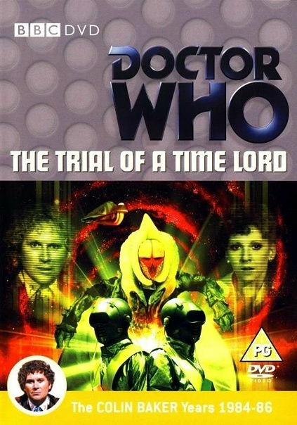
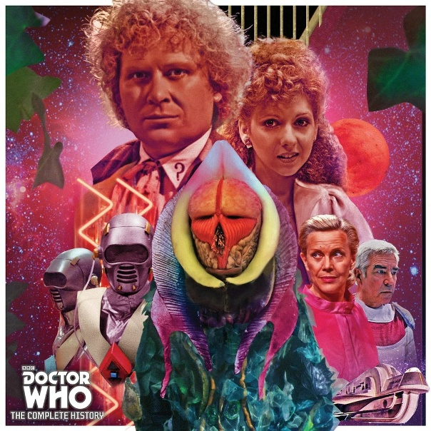
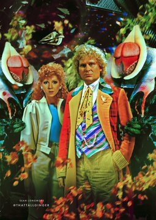

Эра Шестого Доктора (23 сезон)
<<< НАЗАД ||| 3. Террор вервоидов ||| ДАЛЬШЕ >>>
Субтитры: Русские и Английские |  |
|---|---|
Субтитры: отсутствуют | |
с фанатской локализацией видеоряда (HuracanTeam) Субтитры: отсутствуют | |
с обновленными спецэффектами Субтитры: отсутствуют | |
с обновленными спецэффектами и фанатской локализацией видеоряда (HuracanTeam) Субтитры: отсутствуют | |
Terror of the Vervoids
Дата выхода: 1-22 ноября 1986
Формат: 4 эпизода по 25 мин.
 |
Суд продолжается, и на этот раз в качестве доказательства показывают приключение, где Доктор путешествует уже с новой спутницей — Мелани Буш. Они прибывают на космическую станцию в 23 веке, где учёные ведут эксперименты по ускоренной эволюции растений. Но в тени станции прячутся вервоиды — существа, способные поглощать жизненную энергию.
Дебют Мел — Бонни Ленгфорд впервые выходит в роли спутницы Доктора. Особенность в том, что зрители впервые видят Мел в действии ещё до того, как показано, как она и Доктор познакомились. Их первая встреча останется за кадром — «зияющая дыра» в хронологии, так и не заполненная на экране.
VHS - октябрь 1993 |   DVD+Boxset - 29 сентября 2008 |  Blu-ray - 7 октября 2019 * Версия в нашей группе |
|---|





Отрывок: